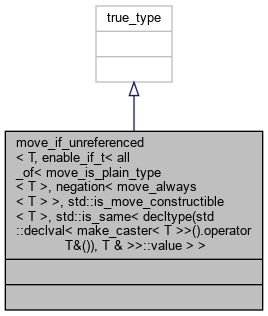

Inheritance diagram for move_if_unreferenced< T, enable_if_t< all_of< move_is_plain_type< T >, negation< move_always< T > >, std::is_move_constructible< T >, std::is_same< decltype(std::declval< make_caster< T >>().operator T&()), T & >>::value > >:

Collaboration diagram for move_if_unreferenced< T, enable_if_t< all_of< move_is_plain_type< T >, negation< move_always< T > >, std::is_move_constructible< T >, std::is_same< decltype(std::declval< make_caster< T >>().operator T&()), T & >>::value > >:
The documentation for this struct was generated from the following file: